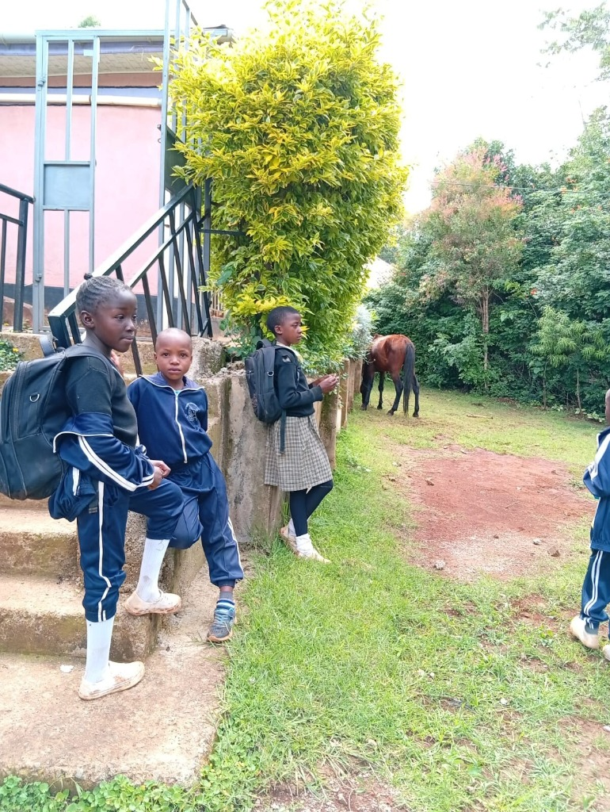

Lynpark Learning Centre was founded with a simple but powerful vision — that every child in rural Kenya deserves access to quality education, regardless of their circumstances.
What started as a small community initiative has grown into a thriving centre of learning, registered under the Ministry of Education, Kenya. Today, we serve over 500 students from Pre-Primary through Grade 8, offering the Competency-Based Curriculum (CBC) that equips our learners with 21st-century skills.
Our campus sits on a beautiful piece of land where children can learn, play, and grow in a safe and nurturing environment. With dedicated teachers, modern learning resources, and a strong focus on character development, LLC has become a beacon of hope for families in our community.

To develop an all round learner with strong character, a positive attitude with excellence. We are committed to providing holistic education that nurtures academic ability, moral integrity, and social responsibility in every child.
To be a leading centre of excellence that will reach the most vulnerable and needy child in rural area. We envision a world where geography and circumstance do not determine a child's future.
"Better The Best"
Our motto inspires us to continuously improve — to take what is already good and make it great. We instill this mindset in every learner who walks through our doors.
Lynpark Learning Centre was founded as a small community school with just 30 students and 3 teachers, driven by a passion to provide quality education in rural Kenya.
The school was officially registered under the Ministry of Education, Kenya, marking a significant milestone in our journey to becoming a recognised centre of learning.
Our first cohort of Class 8 students graduated with outstanding results, with several students earning scholarships to top secondary schools across Kenya.
New classrooms, a science laboratory, and a modern library were added to accommodate our growing student body of over 400 learners.
LLC fully transitioned to the Competency-Based Curriculum, introducing Junior Secondary (Grade 7-8) and investing in teacher training and digital learning resources.
Striving for the highest standards in everything we do — academically and beyond.
Building character through honesty, responsibility, and moral uprightness.
Fostering self-control, respect, and commitment to doing what is right.
Working together to achieve common goals and supporting one another.
Embracing creativity and new ideas to solve problems and grow.
Caring for every child, especially the most vulnerable and needy in our community.
We welcome parents and guardians to visit our campus, meet our teachers, and experience the LLC difference firsthand.